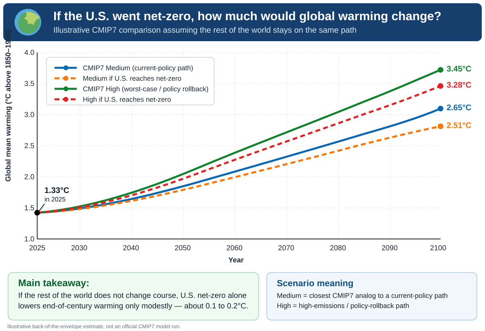

What this shows
In this illustrative comparison, U.S. net-zero lowers projected 2100 warming from about 2.65°C to 2.51°C in the medium case and from about 3.45°C to 3.28°C in the high case.
The point is simple: the United States contributed a great deal to historical emissions, but if the rest of the world stays on roughly the same path, U.S. net-zero by itself changes the future global temperature path only modestly.
This is an illustrative back-of-the-envelope U.S.-only counterfactual using CMIP7-style scenario framing, not an official CMIP7 model run.